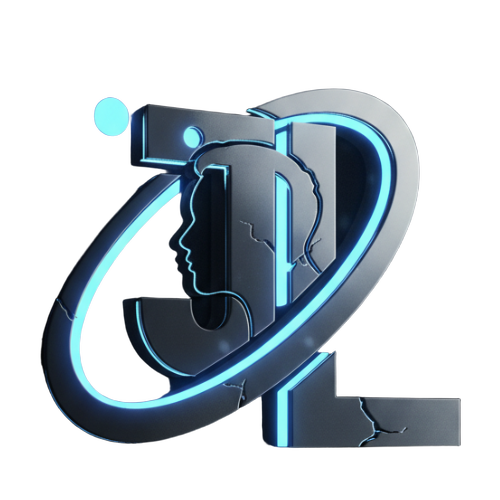

📍 Abuja, Nigeria
I'm a versatile Software Engineer, Tech Educator, and SME Advisor dedicated to empowering African businesses through technology and strategic data analysis. With a passion for driving organizational growth, I believe that when technology is applied strategically, it becomes a powerful catalyst for both business and personal transformation.
Welcome to my web design course! I've created this learning platform to demystify web development and make it accessible to everyone. Let's build something amazing together.
I serve as a consultant and builder, helping small and medium enterprises (SMEs) grow through simplified, strategic tech solutions tailored to their unique business challenges.
My technical expertise spans web development, data science, and data analysis. I transform raw data into actionable insights that drive business decisions and innovation.
I regularly share insights on Medium about leadership, personal development, and the strategic application of technology. I'm also the author of "Not Even My Mistakes," a book that reframes failure as a valuable part of the growth process.
💡 Growth through Tech: Technology, when applied strategically, is a powerful catalyst for business and personal growth. My mission is to democratize tech knowledge and help individuals and organizations unlock their potential through digital transformation.